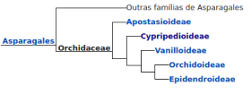

Orquidias o Que são
Orquídeas são todas as plantas que compõem a família Orchidaceae, pertencente à ordem Asparagales, uma das maiores famílias de plantas existentes. Apresentam muitíssimas e variadas formas, cores e tamanhos e existem em todos os continentes, exceto na Antártida, predominando nas áreas tropicais. Não são plantas parasitas, nutrindo-se apenas de material em decomposição que cai das árvores e acumula-se ao emaranhar-se em suas raízes. Elas encontram muitas formas de reprodução: na natureza, principalmente pela dispersão das sementes, mas em cultivo pela divisão de touceiras, semeadura in-vitro ou meristemagem. A respeito da enorme variedade de espécies, pouquíssimos são os casos em que se encontrou utilidade comercial para as orquídeas além do uso ornamental. Entre seus poucos usos, o único amplamente difundido é a produção de baunilha a partir dos frutos de algumas espécies do gênero Vanilla, mas mesmo este limitado pela produção de um composto artificial similar de custo muito inferior. Mesmo para ornamentação, apenas uma pequena parcela das espécies é utilizada, pois a grande maioria apresenta flores pequenas e folhagens pouco atrativas. Por outro lado, das espécies vistosas, os orquidicultores vêm obtendo milhares de diferentes híbridos de grande efeito e apelo comercial. Apesar da grande maioria das espécies não serem vistosas, o formato intrigante de suas flores é muito atrativo aos aficcionados que prestam atenção às mini orquídeas. Como nenhuma outra família de plantas, as orquídeas despertam interesse em colecionadores que ajuntam-se em associações orquidófilas, presentes em grande parte das cidades por todo o mundo. Estas sociedades geralmente apresentam palestras frequentes e exposições de orquídeas periódicas, contribuindo muito para a difusão do interesse por estas plantas e induzindo os cultivadores profissionais a reproduzir artificialmente até espécies que poucos julgariam ter algum valor ornamental, contribuindo para diminuir a pressão sobre a coleta das plantas ainda presentes na natureza.
Os tipos mais bomitos de orquidias


Família das orquidias
Orchidaceae é família de plantas que se divide em cinco subfamílias de acordo com o Angiosperm Phylogeny Group, um grupo de biólogos baseados nos Estados Unidos dedicados à classificação filogenética das Angiospermas.[42] A classificação é apresentada segundo a série de livros Genera Orchidacearum para as primeiras quatro subfamílias e para a subfamília Epidendroidae foi utilizado em parte a classificação do botânico estadunidense Robert Louis Dressler.[43] Cladograma mostrando a relação evolucionária das subfamílias de orquídeas:
Apostasioideae
Apostasioideae é uma subfamília de Orchidaceae estudada pelo botânico alemão Heinrich Gustav Reichenbach. São plantas com pólen pastoso ou farinoso, que geralmente não formam polínias, com duas ou três anteras férteis linear-lanceoladas, folhas de bases embainhadas, estaminóide alongado e labelo similar às pétalas. São 2 gêneros e 16 espécies do Sudeste Asiático.[44][45]
Cypripedioideae
Cypripedioideae é uma subfamília de Orchidaceae foi estudada pelo botânico polonês Dariusz Szlachetko. São plantas com pólen pastoso ou farinoso, que geralmente não formam polínias, com uma antera fértil incumbente e folhas sem bases embainhadas. São 15 gêneros e 250 espécies na faixa tropical e subtropical úmida do globo, e leste dos Estados Unidos.[44]
Vanilloideae
Cypripedioideae é uma subfamília de Orchidaceae foi descrita pelo botânico inglês John Lindley em 1840. São plantas com pólen pastoso ou farinoso, que geralmente não formam polínias, com duas anteras férteis oblongas ou ovais, folhas de bases embainhadas, estaminóde em formato de escudo e labelo geralmente saquiforme. São 5 gêneros e 170 espécies das regiões temperadas do mundo, poucas na América tropical.[44][45]
Orchidoideae
Orchidoideae é uma subfamília de Orchidaceae foi descrita pelo botânico inglês John Lindley. São plantas com pólen coeso formando polínias, uma antera fértil ereta ou tombada para trás e folhas enroladas claramente plicadas, raízes frequentemente carnosas. São 208 gêneros e 3630 espécies distribuídas em todo mundo, exceto nos desertos mais secos, no círculo Ártico e na Antártida.[44]
Epidendroideae
Epidendroideae é uma subfamília de Orchidaceae foi descrita pelo botânico inglês John Lindley. São plantas com pólen coeso formando polínias, com antera incumbente, ou tombada para trás mas então com folhas claramente plicadas e raízes raramente carnosas. Formada por mais de 500 gêneros e cerca de 20.000 espécies distribuídas sobre as mesmas regiões de Orchidoideae, embora existam algumas espécies subterrâneas no deserto australiano.[44]